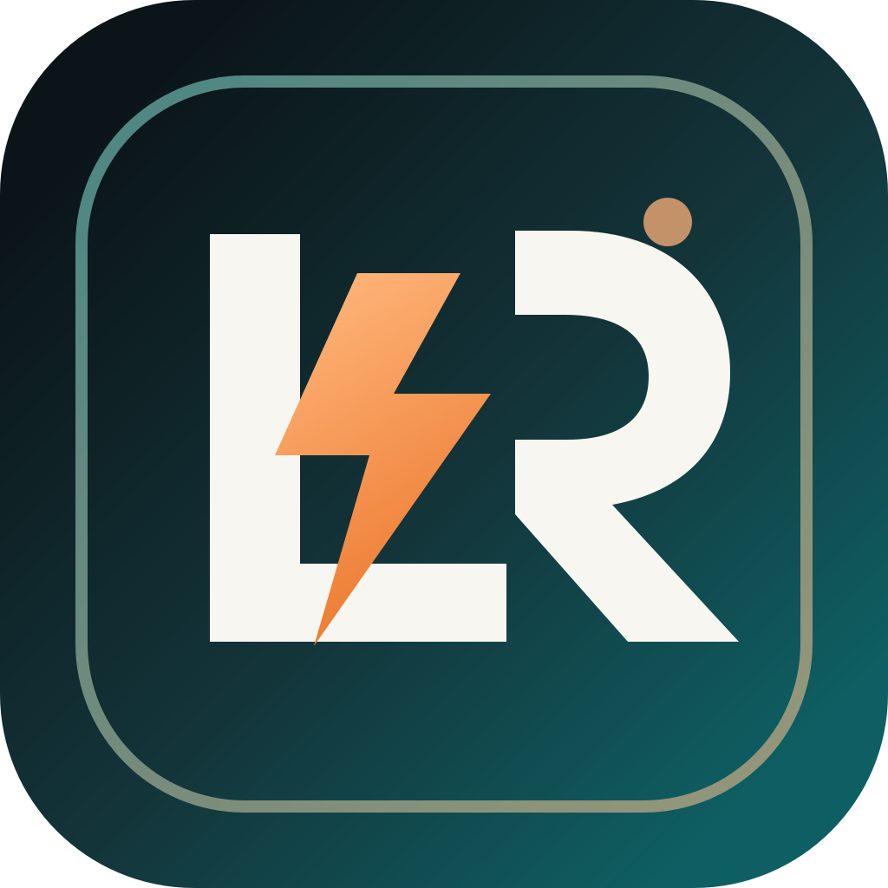

Creative operations
Users collect product references, manage prompts, store approved outputs, and track publishing status in a structured workflow before sending any media to TikTok.

Le8Geek is a web-based operations tool for TikTok Shop creators and affiliates. It keeps product references, campaign prompts, generated assets, review status, and final upload actions in one workflow before the user manually edits the draft and publishes it from TikTok.
The app is designed for product-video operators who need a controlled path from source product image to TikTok draft upload. It is not a consumer social app and it does not publish without explicit user action.
Users collect product references, manage prompts, store approved outputs, and track publishing status in a structured workflow before sending any media to TikTok.
Le8Geek uploads videos as drafts or private posts so the user can add final captions, disclosures, and affiliate links inside TikTok before publishing publicly.
| Product | Scope | Why it is used |
|---|---|---|
| Login Kit | user.info.basic |
User authentication and account linking before any upload action. |
| Content Posting API | video.upload |
Upload a selected approved video as a TikTok draft or private post. |
The review flow is intentionally simple and auditable.
User signs in with TikTok through the registered Login Kit OAuth flow.
User selects a product, reviews generated creatives, and chooses the final asset.
Le8Geek uploads the approved video through Content Posting API for final manual review in TikTok.